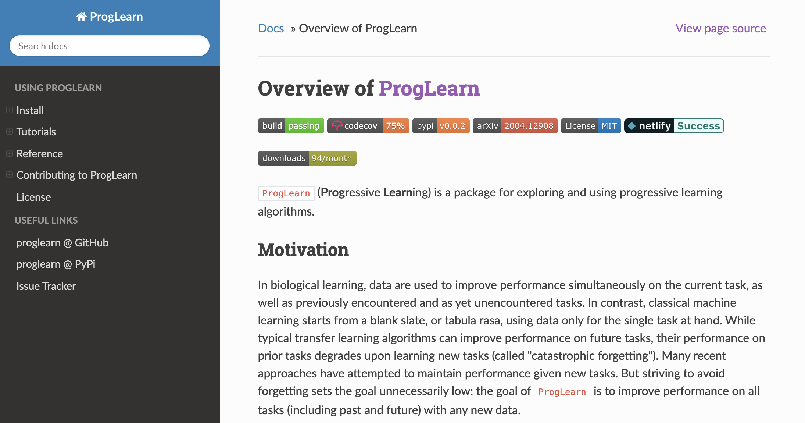

class:inverse ### Lifelong Learning: Theory and Practice [JHU](https://www.jhu.edu/): Jayanta Dey | Hayden Helm | Ronak Mehta | Will LeVine | Carey E. Priebe | Joshua T. Vogelstein <br> [Microsoft Research](https://www.microsoft.com/en-us/research/): Weiwei Yang | Jonathan Larson | Bryan Tower | Chris White  --- class:inverse ## Lifelong Learning in AI - Given a .ye[sequence] of data associated with different tasks - .ye[Forward transfer]: transfer from past tasks to future tasks - .ye[Backward transfer]: transfer from future tasks to past tasks - .ye[Catastrophic forgetting]: learning new tasks causes performance .ye[degradation] on previous tasks -- ## Natural Intelligence - Biological/natural intelligence (BI) is .ye[Lifelong]: - learning a 2nd language improves 1st language - learning to run improves walking --- class: inverse ## Goals of this work - Formalize the above AI claims - Develop algorithms that move beyond catastrophic forgetting --- class:inverse ## Outline - Background - Lifelong learning - Evaluation criteria - Algorithm - Simulations - Real data - Theory - Discussion --- class:inverse, middle ### Background --- class: inverse ## A simple learning example - $z_i=(x_i,y_i)$, $i \in \lbrace 1, 2, \ldots, 200 \rbrace$ - $x \in \mathbb{R}^2$ - $y \in \lbrace 0,1 \rbrace$ - we desire to learn a classifier that minimizes expected misclassification rate --- class: inverse <img src="images/rock20/s2.png" style="position:absolute; top:0px; left:100px; height:100%;"/> --- class: inverse <img src="images/rock20/s3.png" style="position:absolute; top:0px; left:100px; height:100%;"/> --- class: inverse <img src="images/rock20/s3a.png" style="position:absolute; top:0px; left:100px; height:100%;"/> --- class: inverse ## But there is a problem... "Training on a new set of items may drastically disrupt performance on previously learned items." -- McCloskey & Cohen, 1989 --- class: inverse ## 30 years later... <img src="images/rock20/masse1.png" style="width:600px;"/> <img src="images/rock20/flesch1.png" style="width:600px;"/> <img src="images/rock20/kirkpatrick1.png" style="width:600px;"/> --- class: inverse ## Last Year: A Grand Challenge <br> "We need to invent a new kind of learning that .ye[leverages existing knowledge], rather than one that obstinately starts over from square one.”— Rebooting AI, Gary Marcus, Ernest Davis, 2019 <br> "One such obstacle is adaptability or robustness... efforts toward “transfer learning,” “domain adaptation,” and “.ye[lifelong learning]” are reflective of this obstacle." -- Judea Pearl, 2019 --- class: inverse ## This Year: A Real Challenge - Industry - Microsoft/Amazon/Google trained a recommender system on existing products, then a new product is launched - Healthcare - A new disease, test, treatment exists - Augmented Reality - Walking around, go to a new city In all cases, re-training from scratch is just too expensive, we desire to dynamically update with new data --- class:inverse, middle ### A Theory of the Lifelong Learnable --- class: inverse ## What is Learning? <img src="images/glivenko-cantelli.png" style="width:350px;"/> <img src="images/Vapnik71b.png" style="width:350px;"/> <img src="images/Valiant84.png" style="width:350px;"/> <img src="images/Mitchell97a.png" style="width:350px;"/> --- class: inverse ## What is Learning? "An algorithm $f$ learns from data $s_n$ with performance measure $\mathcal{E}$, if $f$'s performance improves with $n$.'' -- Tom Mitchell, 1997 (not exact quote) --- class:inverse ## What are data? - Input space: $ x \in \mathcal{X} $ - Output space: $ y \in \mathcal{Y}$ - Let $ s_n =\lbrace (x_1,y_1), \ldots, (x_n, y_n) \rbrace \in \, \mathcal{S}$ --- class:inverse ## What is statistical model? - $ \mathcal{P} = \mathcal{D} \times \mathcal{D}' $ : A collection of evaluation and training distribution pairs - Evaluation distribution $\mathcal{D}$ : A distribution against which risk is evaluated $ R(h) = \mathbb{E}_{(X,Y) \sim D} [l(h(X),Y)]$ - Training distribution $\mathcal{D}'$: A joint distribution of $n$ training samples - No assumption on the relation between $\mathcal{D}$ and $\mathcal{D}'$ --- class:inverse ## What is an Algorithm? $f$ is a learning algorithm, which maps from a dataset to a hypothesis $h$, $$f : \mathcal{S} \rightarrow \mathcal{H}$$ -- - Example 1: Classification - $f$ is *RandomForestClassifier.fit* - $h$ is *RandomForestClassifier.predict* --- class:inverse ## What is Performance? Generalization error $\mathcal{E}$ is the expected risk of algorithm $f$ with respect to training dataset size $n$: $$ \mathcal{E}\_f(S\_n) = \mathbb{E}\_{S\_n \sim D'\_n} [R(\hat{h}\_n)] = \mathbb{E}\_{S\_n \sim D'\_n}[R(f(S\_n))]$$ --- class:inverse ## What is Learning? Letting $S_0$ be a data corpus with no samples, .center[$f$ learns from data $S$ iff $\mathcal{E}_f(S) < \mathcal{E}_f(S_0),$] $\mathcal{E}_f(S_0)$ is the initial performance of $f$ prior to seeing data, and therefore a function of - prior on $\theta$ - inductive bias of $\mathcal{H}$ - estimation bias of $f$ - model bias of $\mathcal{P}$ --- class:inverse ## What is a Setting? A setting is defined by a septuple $\mathcal{B} = \lbrace \mathcal{X}, \mathcal{Y}, \mathcal{S}, \mathcal{P}, \mathcal{H}, \mathcal{F}, \mathcal{E} \rbrace$ In short: $\mathcal{B} = \lbrace \mathcal{F}, \mathcal{H}, \mathcal{E} \rbrace$ --- class:inverse ## What is a Task? - Given a setting $b$ <!-- - some (complexity) constraints on $f \in \mathcal{F}$, $f: \mathcal{Z}^n \to \mathcal{H}$: --> find the $h \in \mathcal{H}$ that minimizes generalization error in that setting: .center[ $h^\diamond = \arg \min\_{h \in \mathcal{H}} \mathcal{E}\_f(S\_n)$.] if there is no constraints on $\mathcal{H}$, then $h^\diamond = h^*$ (Bayes hypothesis) --- class: inverse ## What is Transfer Learning? Given - .ye[source] data $S_1$, - .ye[target] data $S_0$ from possibly another distribution. - let $S = S_0 \cup S_1$. <!-- "An algorithm $f$ .ye[transfer] learns from data $\mathcal{D}_j$ with respect to transfer learning task $t$ with performance measure $\mathcal{E}^t$, if $f$'s performance at task $t$ improves with $\mathcal{D}_j$." --> -- .center[$f$ .ye[transfer] learns from $S_1$ iff $\mathcal{E}_f(S) < \mathcal{E}_f(S_0).$] --- class: inverse ## What is Multitask Learning? - $T_i \in \lbrace{1,2,..,J\rbrace}=[J]$ is a task lable, - Let $ s_n =\lbrace (x_1,y_1, b_1), \ldots, (x_n, y_n, b_n) \rbrace \in \, \mathcal{S}$ $$f : \mathcal{S} \rightarrow \mathcal{H}$$ --- class: inverse ## What is Sequential Learning? Same as "batch" learning, except $f$ updates existing hypothesis on basis of new data, that is, $$f : \mathcal{H} \times \mathcal{S} \rightarrow \mathcal{H}$$ --- class: inverse ## What is Lifelong Learning? Sequential multi-task learning, where - $|\mathcal{J}|$ is (countably) infinite - $J_n$ is the number of tasks observed after $n$ samples --- class:inverse ### Learning Scenarios <br> | | $J>1$ | Sequential | | :---: | :---: | :---: | | Machine | 0 | 0 | | Sequential | 0 | 1 | | Multi-task | 1 | 0 | | Lifelong | 1 | 1 | --- class:inverse, middle ### Evaluation Criteria --- class:inverse ## Learning Efficiency (LE) The Learning efficiency of learning algorithm $f$ for task $t$ is $$ LE\_n^t(f) := \frac{\mathcal{E}\_f^t(S^t)}{\mathcal{E}\_f^t(\bigcup\_{i=1}^T S^i)}. $$ <br> Algorithm $ f $ transfer learns if $ LE_n^t(f) > 1 $. --- class:inverse ## Forward & Backward LE $$ FLE\_n^t(f) := \frac{\mathcal{E}\_f^t(S^t)}{\mathcal{E}\_f^t(\bigcup\_{i=1}^t S^i)}. $$ -- <br> $$ BLE\_n^t(f) := \frac{\mathcal{E}\_f^t(\bigcup\_{i=1}^t S^i)}{\mathcal{E}\_f^t(\bigcup\_{i=1}^T S^i)}. $$ <br> LE factorizes: $$ LE\_n^t(f) := \frac{\mathcal{E}\_f^t(S^t)}{\mathcal{E}\_f^t(\bigcup\_{i=1}^t S^i)} \times \frac{\mathcal{E}\_f^t(\bigcup\_{i=1}^t S^i)}{\mathcal{E}\_f^t(\bigcup\_{i=1}^T S^i)}. $$ --- class: inverse, middle ### Algorithm --- class: inverse ## Lifelong Learning Schema <img src="images/learning-schemas.png" style="width:700px;"/> --- class: inverse, middle ### Simulations --- class: inverse ## Simulation data generation - .lb[XOR] - Samples in the (0,0) and (1,1) quadrants are green - samples in the (0,1) and (1,0) quadrants are orange - .lb[XNOR] - Samples in the (0,0) and (1,1) quadrants are orange - samples in the (0,1) and (1,0) quadrants are green - .lb[R-XOR] - XOR rotated by R degrees <img src="images/sim.png" class="center"/> --- class: inverse ## Lifelong learning in a simple environment <img src="images/l2_sim.png" style="height:500px;"> --- class: inverse, middle ### Benchmark Data --- class:inverse ## Consider an example - *CIFAR 100* is a popular image classification dataset with 100 classes of images. - CIFAR 10x10 breaks the 100-class task problem into 10 tasks, each with 10-class. - 500 training images and 100 testing images per class. - All images are 32x32 color images. <img src="images/l2m_18mo/cifar-10.png" style="position:absolute; left:250px; width:400px;"/> --- class: inverse ### Synergistic Algorithms Show Forward Transfer for the CIFAR 10x10 Tasks --- class: inverse ### Synergistic Algorithms Uniquely Show Backward Transfer for Each CIFAR 10x10 Task --- class: inverse ## Key Insights 1. Avoiding catastrophic forgetting simply means backward learning efficiency is 1, but why stop there? 2. Ensembling internal representations enables BLE > 1 --- class:inverse ## Limitations 2. Tasks must be discrete 3. Data must be batched into tasks 4. Tasks must be known 5. Feature space must be the same for all tasks 1. Internal representation grows linearly with # of tasks 1. Must grow rather than recruit new internal representations --- class: inverse ## Key Accomplishments - Formalized Lifelong Learning as generalization of classical machine learning - Introduced novel evaluation criteria: forward and backward learning efficiency - Proposed generic lifelong learning algorithm framework by ensembling internal representations - Implemented Synergistic Forests and Network as specific examples - Demonstrated Synergistic algorithms uniquely exhibits - backward transfer - forward transfer --- class: inverse ### [http://proglearn.neurodata.io/](http://proglearn.neurodata.io/)  --- class: inverse ## References 1. J. Dey et al. [Towards a theory of out-of-distribution learning](https://arxiv.org/abs/2109.14501), arXiv, 2021. 1. J. Dey et al. [Representation Ensembling for Synergistic Lifelong Learning with Quasilinear Complexity](https://arxiv.org/abs/2004.12908), arXiv, 2021. 1. Xu, Haoyin, et al. [Streaming Decision Trees and Forests](https://arxiv.org/abs/2110.08483), arXiv, 2021. 1. C. E. Priebe et al. [Modern Machine Learning: Partition and Vote](https://doi.org/10.1101/2020.04.29.068460), 2020. 1. R Guo, et al. [Estimating Information-Theoretic Quantities with Uncertainty Forests](https://arxiv.org/abs/1907.00325). arXiv, 2019. 1. R. Perry, et al. [Manifold Forests: Closing the Gap on Neural Networks](https://openreview.net/forum?id=B1xewR4KvH). arXiv, 2019. 1. C. Shen and J. T. Vogelstein. [Decision Forests Induce Characteristic Kernels](https://arxiv.org/abs/1812.00029). arXiv, 2019. 1. M. Madhya, et al. [Geodesic Learning via Unsupervised Decision Forests](https://arxiv.org/abs/1907.02844). arXiv, 2019. 1. M. Madhya, et al. [PACSET (Packed Serialized Trees): Reducing Inference Latency for Tree Ensemble Deployment](https://arxiv.org/abs/2011.05383). arXiv, 2020. --- class:inverse ### Acknowledgements <!-- <div class="small-container"> <img src="faces/ebridge.jpg"/> <div class="centered">Eric Bridgeford</div> </div> <div class="small-container"> <img src="faces/pedigo.jpg"/> <div class="centered">Ben Pedigo</div> </div> <div class="small-container"> <img src="faces/jaewon.jpg"/> <div class="centered">Jaewon Chung</div> </div> --> ##### JHU <div class="small-container"> <img src="faces/cep.png"/> <div class="centered">Carey Priebe</div> </div> <!-- <div class="small-container"> <img src="faces/randal.jpg"/> <div class="centered">Randal Burns</div> </div> --> <!-- <div class="small-container"> <img src="faces/cshen.jpg"/> <div class="centered">Cencheng Shen</div> </div> --> <!-- <div class="small-container"> <img src="faces/bruce_rosen.jpg"/> <div class="centered">Bruce Rosen</div> </div> <div class="small-container"> <img src="faces/kent.jpg"/> <div class="centered">Kent Kiehl</div> </div> --> <!-- <div class="small-container"> <img src="faces/mim.jpg"/> <div class="centered">Michael Miller</div> </div> <div class="small-container"> <img src="faces/dtward.jpg"/> <div class="centered">Daniel Tward</div> </div> --> <!-- <div class="small-container"> <img src="faces/vikram.jpg"/> <div class="centered">Vikram Chandrashekhar</div> </div> <div class="small-container"> <img src="faces/drishti.jpg"/> <div class="centered">Drishti Mannan</div> </div> --> <div class="small-container"> <img src="faces/jesse.jpg"/> <div class="centered">Jesse Patsolic</div> </div> <!-- <div class="small-container"> <img src="faces/falk_ben.jpg"/> <div class="centered">Benjamin Falk</div> </div> --> <!-- <div class="small-container"> <img src="faces/kwame.jpg"/> <div class="centered">Kwame Kutten</div> </div> --> <!-- <div class="small-container"> <img src="faces/perlman.jpg"/> <div class="centered">Eric Perlman</div> </div> --> <!-- <div class="small-container"> <img src="faces/loftus.jpg"/> <div class="centered">Alex Loftus</div> </div> --> <!-- <div class="small-container"> <img src="faces/bcaffo.jpg"/> <div class="centered">Brian Caffo</div> </div> --> <!-- <div class="small-container"> <img src="faces/minh.jpg"/> <div class="centered">Minh Tang</div> </div> --> <!-- <div class="small-container"> <img src="faces/avanti.jpg"/> <div class="centered">Avanti Athreya</div> </div> --> <!-- <div class="small-container"> <img src="faces/vince.jpg"/> <div class="centered">Vince Lyzinski</div> </div> --> <!-- <div class="small-container"> <img src="faces/dpmcsuss.jpg"/> <div class="centered">Daniel Sussman</div> </div> --> <!-- <div class="small-container"> <img src="faces/youngser.jpg"/> <div class="centered">Youngser Park</div> </div> --> <!-- <div class="small-container"> <img src="faces/shangsi.jpg"/> <div class="centered">Shangsi Wang</div> </div> --> <!-- <div class="small-container"> <img src="faces/tyler.jpg"/> <div class="centered">Tyler Tomita</div> </div> --> <!-- <div class="small-container"> <img src="faces/james.jpg"/> <div class="centered">James Brown</div> </div> --> <!-- <div class="small-container"> <img src="faces/disa.jpg"/> <div class="centered">Disa Mhembere</div> </div> --> <!-- <div class="small-container"> <img src="faces/gkiar.jpg"/> <div class="centered">Greg Kiar</div> </div> --> <!-- <div class="small-container"> <img src="faces/jeremias.png"/> <div class="centered">Jeremias Sulam</div> </div> --> <div class="small-container"> <img src="faces/meghana.png"/> <div class="centered">Meghana Madhya</div> </div> <!-- <div class="small-container"> <img src="faces/percy.png"/> <div class="centered">Percy Li</div> </div> --> <div class="small-container"> <img src="faces/hayden.png"/> <div class="centered">Hayden Helm</div> </div> <div class="small-container"> <img src="faces/rguo.jpg"/> <div class="centered">Richard Gou</div> </div> <div class="small-container"> <img src="faces/ronak.jpg"/> <div class="centered">Ronak Mehta</div> </div> ##### Microsoft Research <div class="small-container"> <img src="faces/chwh-180x180.jpg"/> <div class="centered">Chris White</div> </div> <div class="small-container"> <img src="faces/weiwei.jpg"/> <div class="centered">Weiwei Yang</div> </div> <div class="small-container"> <img src="faces/jolarso150px.png"/> <div class="centered">Jonathan Larson</div> </div> <div class="small-container"> <img src="faces/brtower-180x180.jpg"/> <div class="centered">Bryan Tower</div> </div> ##### DARPA Hava, Ben, Robert, Jennifer, Ted. </div> <!-- <img src="images/funding/nsf_fpo.png" STYLE="HEIGHT:95px;"/> --> <!-- <img src="images/funding/nih_fpo.png" STYLE="HEIGHT:95px;"/> --> <!-- <img src="images/funding/darpa_fpo.png" STYLE=" HEIGHT:95px;"/> --> <!-- <img src="images/funding/iarpa_fpo.jpg" STYLE="HEIGHT:95px;"/> --> <!-- <img src="images/funding/KAVLI.jpg" STYLE="HEIGHT:95px;"/> --> <!-- <img src="images/funding/schmidt.jpg" STYLE="HEIGHT:95px;"/> --> --- class: middle, inverse ###Questions?